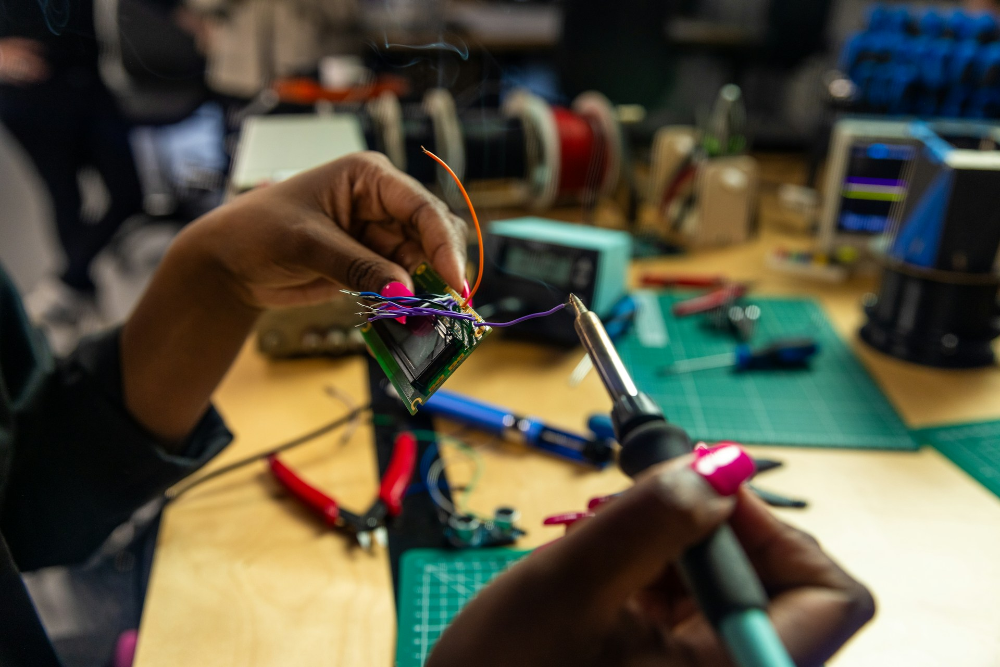
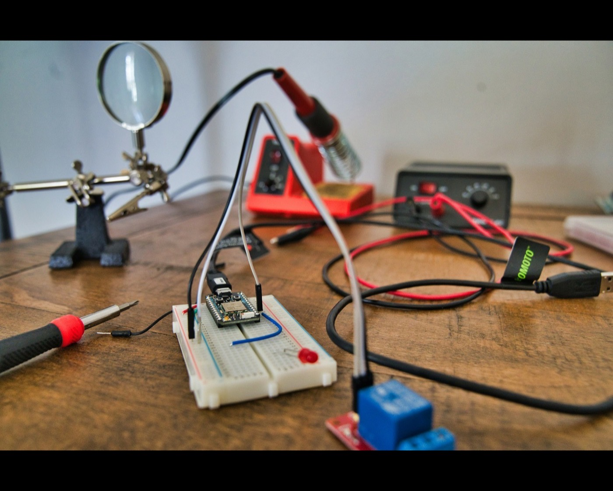

Connect the people
Meet peers with similar interests, mentors who have navigated the path, alumni with perspective, and collaborators who fill the gaps in your skill set.
Oberlin College
That’s the 3-2 program. You finish with two degrees. This society is where students on that path find each other, swap what they’ve figured out, and build things in the meantime.

Students interested in engineering are distributed across courses, departments, class years, and future partner schools. We connect that scattered energy into a community with memory, direction, and the capacity to build.
Read our full mission →Meet peers with similar interests, mentors who have navigated the path, alumni with perspective, and collaborators who fill the gaps in your skill set.
Course planning, partner-school decisions, applications, internships, and lessons from older students should become an institutional memory, not disappear each year.
Teams can move from problem framing to prototypes, testing, documentation, and public demonstrations through the project board and future showcase opportunities.


Open briefs give teams a serious starting point while leaving room to question the premise, improve the scope, and choose a stronger technical direction.
View every project →The proposed format would take teams from evidence to prototype, design review, testing, and a public defense of their most important decisions.
Oberlin's program combines three years of liberal-arts study with two years of accredited engineering coursework at a partner institution. The society helps students ask better questions, plan earlier, and learn from the people ahead of them.
Understand the pathway →Community nights, panels, build sessions, design reviews, and public showcases can turn the society into a rhythm students can rely on.
See the full calendar →The society will keep a public record of each leadership term, project, major program, and decision that future members should not have to rediscover.
Meet the organizing team →